UNIFICADO · CAMPINAS · MATERIAL DE TREINAMENTO
Suprimentos
Manual das telas
Solicitação, aprovação e atendimento em um fluxo que cabe no PC, tablet ou celular.
Homologação v1.0.61
25 de outubro de 2026
Os pedidos e imagens marcados DEMO são sintéticos. Esta versão está em homologação em :18446; não é instrução para pedidos reais em produção.
ÍNDICE
Sumário
01 · VISÃO GERAL
Resumo executivo
O Suprimentos reúne solicitações de materiais do almoxarifado geral de Campinas. Hoje já permite abrir um pedido no web ou PWA, aprovar por nível e centro de custo, separar, entregar e confirmar o recebimento. Há cadastro básico de materiais, fornecedores, centros de custo, alçadas, parâmetros e papéis.
Usam o fluxo o solicitante, os aprovadores N1 e N2, o almoxarife, o comprador, a Qualidade e o administrador. Cada pessoa vê somente as telas e ações concedidas. As contas master Ricardo, Marcelo e Alex estão liberadas para testes na homologação, inclusive com papéis APROVADOR N1/N2.
Um pedido em seis linhas
- O solicitante escolhe itens, CC, urgência e envia pelo Unificado ou PWA.
- O aprovador N1 confere e aprova, devolve para ajuste ou reprova.
- Se o valor exigir, o aprovador N2 decide depois do N1.
- O almoxarife separa os itens e registra entregas totais ou parciais.
- O solicitante confirma tudo ou relata um problema.
- Sem resposta após a entrega, o sistema conclui automaticamente em 48 horas.
Caminho mais comum
02 · CAMINHO DO PEDIDO
Fluxograma de processamento
Legenda: verde = início/fim; cinza = ação atual; amarelo = decisão; azul = ação automática do sistema. Roxo e linha pontilhada = fase futura, ainda não disponível. Setas contínuas = fluxo atual S1.
O pedido feito sem rede fica no aparelho e é enviado quando houver conexão e sessão válida. O reenvio usa a mesma identificação, sem duplicar. Devolução retorna ao solicitante; reprovação encerra a análise; cancelamento é permitido antes do atendimento.
03 · QUEM FAZ O QUÊ
Matriz de responsabilidades
R = executa; A = responde pela decisão; C = consultado; I = informado. O asterisco marca o aprovador do nível atual. O fechamento automático é feito pelo sistema; as pessoas apenas acompanham.
| Etapa | Solicitante | Aprovador N1 | Aprovador N2 | Almoxarife | Comprador | Qualidade | Admin Suprimentos | Pessoa em Campinas |
|---|---|---|---|---|---|---|---|---|
| Abrir pedido | R/A | I | I | I | I | — | C | [a definir] |
| Aprovar nível 1 | I | R/A | — | I | I | — | C | [a definir] |
| Aprovar nível 2 | I | C | R/A | I | I | — | C | [a definir] |
| Devolver ou reprovar | I | R/A* | R/A* | I | I | — | C | [a definir] |
| Separar item | I | — | — | R/A | I | — | C | [a definir] |
| Entregar item | I | — | — | R/A | I | — | C | [a definir] |
| Confirmar recebimento | R/A | I | I | C | — | — | I | [a definir] |
| Fechamento automático | I | I | I | I | I | — | I | [a definir] |
| Cadastrar materiais | I | — | — | C | R | — | A | [a definir] |
| Cadastrar fornecedores | — | — | — | — | R | R | A | [a definir] |
| Definir alçadas e papéis | I | C | C | I | I | I | R/A | [a definir] |
| Ajustar parâmetros | I | C | C | C | C | C | R/A | [a definir] |
Preencha a coluna “Pessoa em Campinas” antes de distribuir o processo. Papéis operacionais e concessões de telas precisam estar cadastrados para cada conta.
04 · GUIA VISUAL
Telas web e PWA
Cada tela aparece abaixo em PC, tablet e celular, quando faz parte da casca. As telas do PWA mostram celular e tablet para comparação. Clique em qualquer imagem no HTML para ampliar.
MANUAL DAS TELAS · PAINEL
Painel
O que é. Fila da unidade e indicadores do que pede atenção.
Quem usa. Todos os papéis com acesso ao Suprimentos.
Como aparece em cada aparelho
Item por item
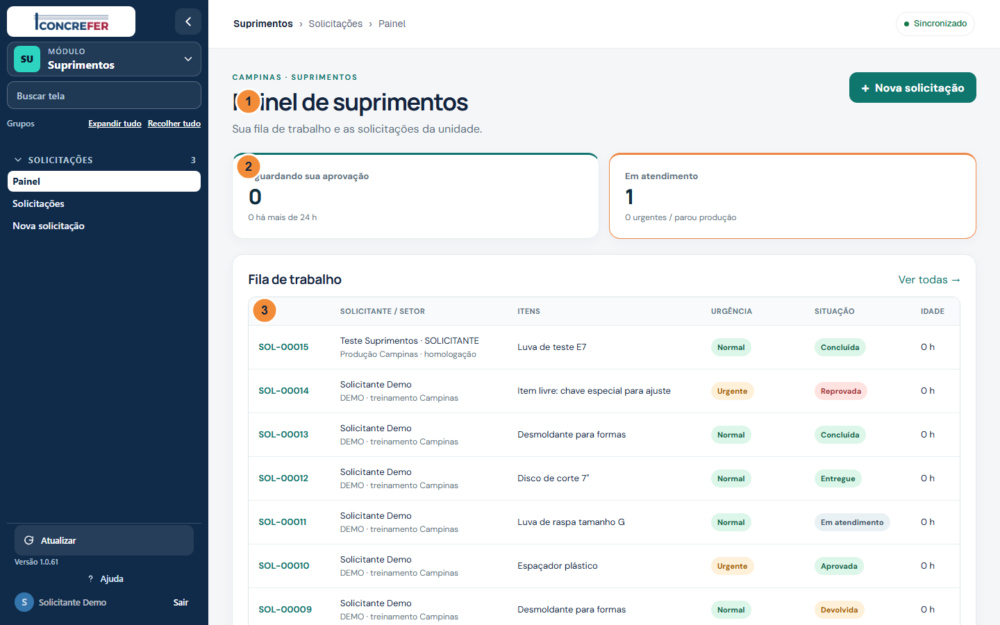
| Marca | Elemento | O que faz e como usar |
|---|---|---|
| 1 | Painel | Veja a informação nesta área e use os controles permitidos ao seu papel. |
| 2 | Indicadores | Resumem as pendências e a urgência; abra a fila para conferir os pedidos. |
| 3 | Fila de trabalho | Clique no número para ler o detalhe e o histórico. |
Como fazer
- Abra Suprimentos › Painel pelo menu do Unificado.
- Confira as solicitações que aguardam sua aprovação e as que estão em atendimento.
- Toque no número de um pedido para abrir o detalhe.
Regras importantes
Os contadores mostram apenas o que o papel pode ver; pedidos de compra, saldo e silos ainda não estão disponíveis.
Mensagens e bloqueios
Se a fila estiver vazia, confira a lista de Solicitações. Se aparecer acesso negado, peça ao administrador a concessão de tela e de papel em Campinas.
MANUAL DAS TELAS · SOLICITACOES LISTA
Solicitações · lista
O que é. Consulta de pedidos com situação, urgência, origem e alçada.
Quem usa. Solicitante, aprovador, almoxarife, comprador, Qualidade e administrador, dentro de suas permissões.
Como aparece em cada aparelho
Item por item
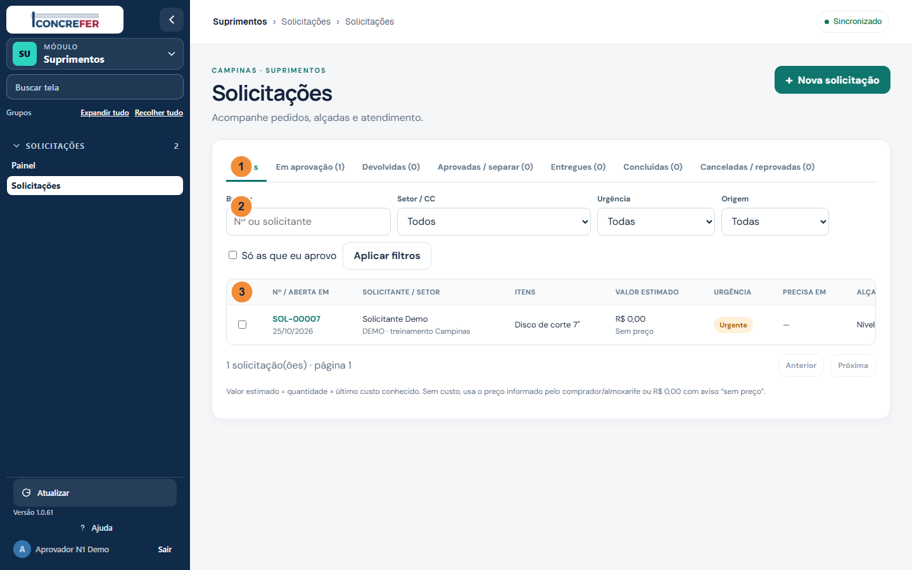
| Marca | Elemento | O que faz e como usar |
|---|---|---|
| 1 | Situações | Muda o conjunto exibido sem alterar nenhum pedido. |
| 2 | Filtros | Restringe a lista por busca, CC, urgência, origem ou sua alçada. |
| 3 | Pedidos | Veja a informação nesta área e use os controles permitidos ao seu papel. |
Como fazer
- Escolha uma aba de situação.
- Use a busca, o centro de custo, a urgência, a origem ou ‘Só as que eu aprovo’ e clique em Aplicar filtros.
- Abra o número do pedido para ver itens, justificativa e histórico.
Regras importantes
O solicitante vê seus pedidos; o aprovador age só no CC e nível concedidos. Valor ‘sem preço’ pede conferência do comprador.
Mensagens e bloqueios
‘Nenhuma solicitação encontrada’ indica que não há resultado para os filtros. Limpe os filtros antes de abrir outro chamado.
MANUAL DAS TELAS · SOLICITACOES LOTE
Solicitações · aprovação em lote
O que é. Seleciona pedidos da mesma fila para decidir em uma ação.
Quem usa. Aprovador do nível e centro de custo correspondentes.
Como aparece em cada aparelho
Item por item
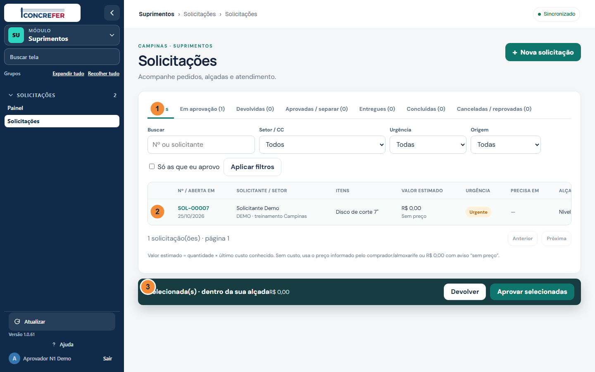
| Marca | Elemento | O que faz e como usar |
|---|---|---|
| 1 | Situações | Muda o conjunto exibido sem alterar nenhum pedido. |
| 2 | Seleção | Marca somente um pedido que você pode decidir neste nível. |
| 3 | Ação em lote | Aprova ou devolve os pedidos marcados; cada resultado é conferido. |
Como fazer
- Marque as caixas dos pedidos habilitados na sua alçada.
- Leia a quantidade e o valor selecionados na barra de lote.
- Escolha Aprovar selecionadas ou Devolver; para devolver, informe o motivo.
Regras importantes
Cada pedido é validado separadamente. Os que estiverem fora da sua alçada são recusados no resultado do lote.
Mensagens e bloqueios
Caixa desabilitada significa que o pedido não está em aprovação na sua alçada. Comentário vazio bloqueia devolução.
MANUAL DAS TELAS · DETALHE SOLICITANTE
Detalhe · solicitante
O que é. Mostra dados, itens, fotos e a linha do tempo do pedido entregue.
Quem usa. Solicitante que abriu o pedido.
Como aparece em cada aparelho
Item por item
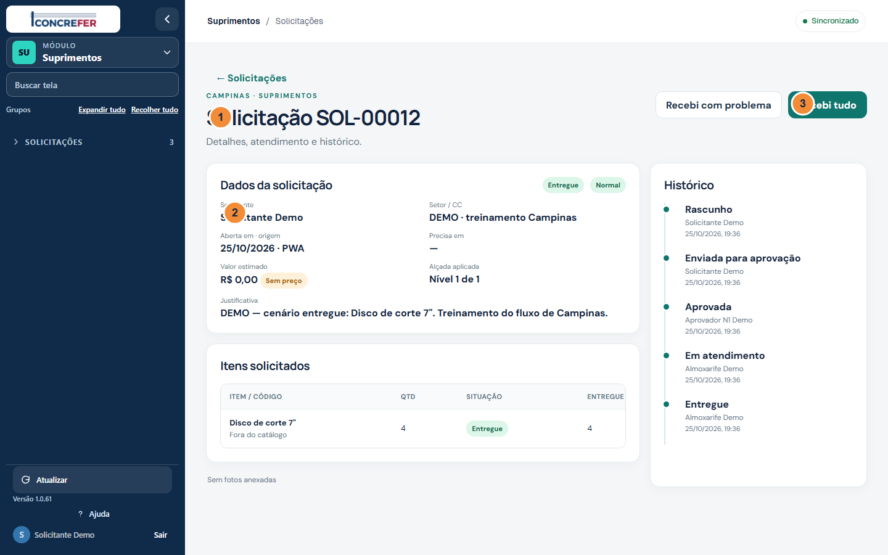
| Marca | Elemento | O que faz e como usar |
|---|---|---|
| 1 | Número e ações | Veja a informação nesta área e use os controles permitidos ao seu papel. |
| 2 | Dados | Veja a informação nesta área e use os controles permitidos ao seu papel. |
| 3 | Recebi tudo | Confirma que a quantidade e os itens foram recebidos. |
Como fazer
- Confira número, CC, urgência e quantidades entregues.
- Se tudo chegou, clique em Recebi tudo.
- Se houver falta ou divergência, clique em Recebi com problema e descreva o que ocorreu.
Regras importantes
Após a entrega, confirme em até 48 horas. Sem resposta, o sistema conclui automaticamente. Problema informado devolve o pedido ao atendimento.
Mensagens e bloqueios
‘Descreva o problema’ aparece quando o texto obrigatório não foi informado. A confirmação não é oferecida antes da entrega.
MANUAL DAS TELAS · DETALHE APROVADOR
Detalhe · aprovador
O que é. Reúne justificativa, valor estimado, alçada e histórico para a decisão.
Quem usa. Aprovador N1 ou N2 da unidade e do CC concedidos.
Como aparece em cada aparelho
Item por item
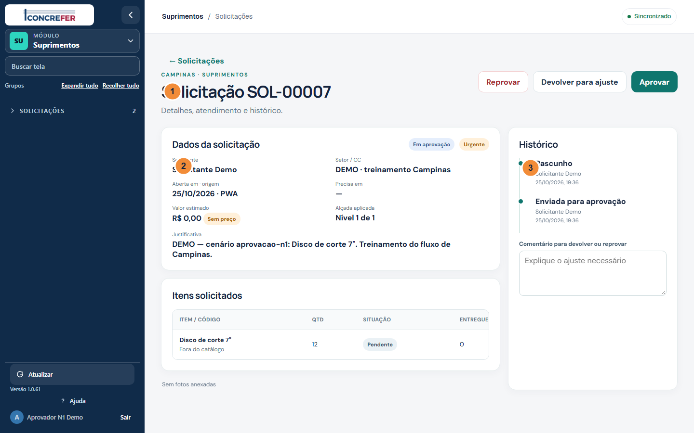
| Marca | Elemento | O que faz e como usar |
|---|---|---|
| 1 | Decisão | Veja a informação nesta área e use os controles permitidos ao seu papel. |
| 2 | Dados e alçada | Veja a informação nesta área e use os controles permitidos ao seu papel. |
| 3 | Histórico | Mostra o que aconteceu, quem fez e quando. |
Como fazer
- Leia o motivo, a urgência, o valor e o nível atual.
- Para aprovar, clique em Aprovar.
- Para pedir ajuste ou negar, escreva um comentário e clique em Devolver para ajuste ou Reprovar.
Regras importantes
N1 vem antes de N2 quando ambos são exigidos. Administrador só aprova se também tiver o papel APROVADOR no nível correto.
Mensagens e bloqueios
Sem comentário, Devolver e Reprovar são bloqueados. Pedido já decidido ou fora da alçada não aceita outra decisão.
MANUAL DAS TELAS · DETALHE ALMOXARIFE
Detalhe · almoxarife
O que é. Permite iniciar o atendimento de um pedido aprovado, item por item.
Quem usa. Almoxarife e administrador de Campinas.
Como aparece em cada aparelho
Item por item
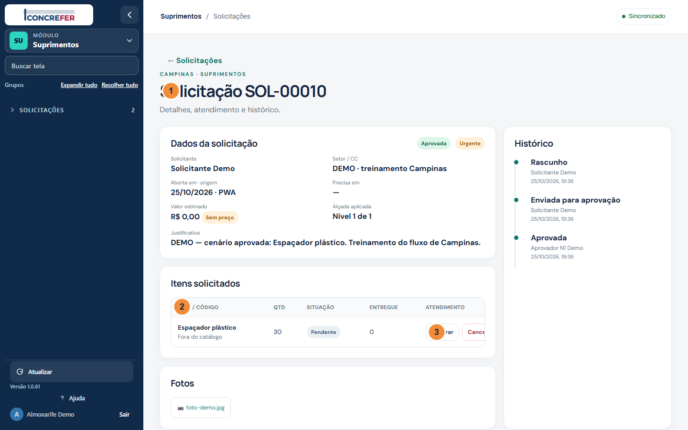
| Marca | Elemento | O que faz e como usar |
|---|---|---|
| 1 | Pedido aprovado | Veja a informação nesta área e use os controles permitidos ao seu papel. |
| 2 | Itens | Veja a informação nesta área e use os controles permitidos ao seu papel. |
| 3 | Separar | Registra o início do atendimento do item. |
Como fazer
- Confira o item e a quantidade solicitada.
- Clique em Separar no item disponível.
- Quando ele estiver separado, use Entregar qtd para registrar a quantidade física entregue.
Regras importantes
A separação passa o pedido a Em atendimento. Nesta fase o atendimento é manual; não há reserva nem saldo automático.
Mensagens e bloqueios
Um item não pode ser separado duas vezes. A quantidade entregue não pode ultrapassar a solicitada.
MANUAL DAS TELAS · DETALHE ENTREGA PARCIAL
Detalhe · entrega parcial
O que é. Mostra quanto já foi entregue e quanto ainda falta de cada item.
Quem usa. Almoxarife e administrador de Campinas.
Como aparece em cada aparelho
Item por item
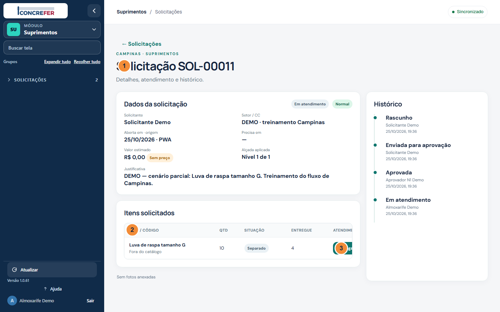
| Marca | Elemento | O que faz e como usar |
|---|---|---|
| 1 | Em atendimento | Veja a informação nesta área e use os controles permitidos ao seu papel. |
| 2 | Quantidade entregue | Veja a informação nesta área e use os controles permitidos ao seu papel. |
| 3 | Entregar restante | Registra uma nova quantidade entregue, até completar o pedido. |
Como fazer
- Veja a coluna Entregue e compare com a quantidade pedida.
- Use Entregar qtd para registrar o restante ou uma nova parcela.
- Após completar todos os itens, o pedido passa a Entregue e volta ao solicitante para confirmação.
Regras importantes
A entrega parcial mantém o pedido Em atendimento e conserva as quantidades anteriores.
Mensagens e bloqueios
O sistema recusa zero, valor negativo ou quantidade que ultrapasse o pedido.
MANUAL DAS TELAS · NOVA ITENS
Nova solicitação · itens
O que é. Primeira etapa de um pedido web: escolha material e quantidade.
Quem usa. Solicitante e administrador.
Como aparece em cada aparelho
Item por item
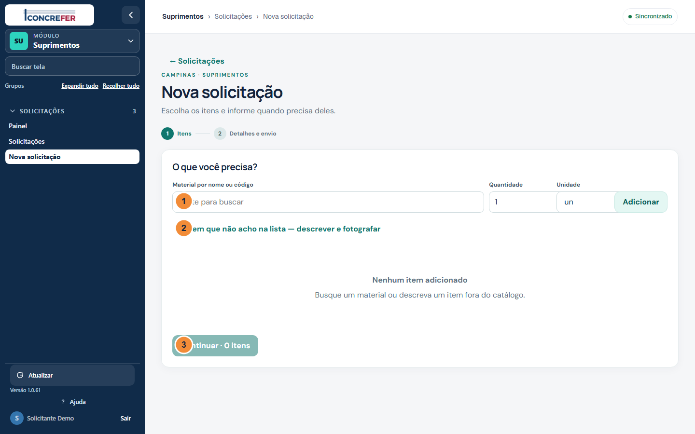
| Marca | Elemento | O que faz e como usar |
|---|---|---|
| 1 | Buscar material | Veja a informação nesta área e use os controles permitidos ao seu papel. |
| 2 | Item fora do catálogo | Permite descrever um material ainda não cadastrado. |
| 3 | Continuar | Veja a informação nesta área e use os controles permitidos ao seu papel. |
Como fazer
- Busque o material pelo nome ou código e informe a quantidade e a unidade.
- Clique em Adicionar; repita para outros itens.
- Se o material não existir, escolha Item que não acho na lista, descreva e depois anexe uma foto. Clique em Continuar.
Regras importantes
Um item livre é aceito e poderá ser vinculado ao catálogo no atendimento. Não aparecem saldos nem preços para o solicitante.
Mensagens e bloqueios
Não é possível avançar sem ao menos um item. Material ou quantidade inválida gera aviso antes do envio.
MANUAL DAS TELAS · NOVA DETALHES
Nova solicitação · detalhes
O que é. Segunda etapa web: centro de custo, prazo, urgência, justificativa e fotos.
Quem usa. Solicitante e administrador.
Como aparece em cada aparelho
Item por item
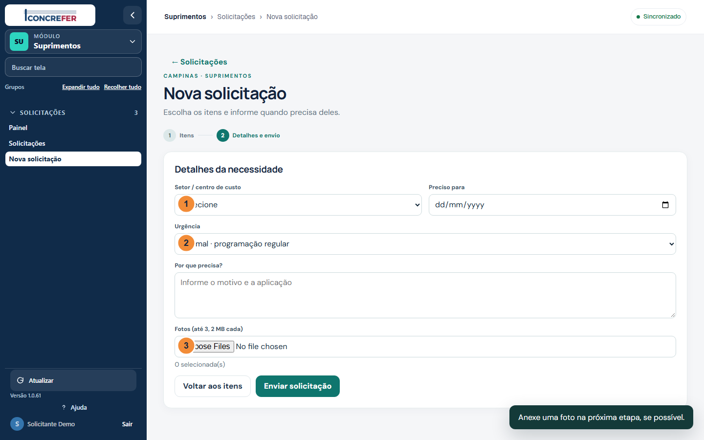
| Marca | Elemento | O que faz e como usar |
|---|---|---|
| 1 | Centro de custo | Escolha um centro para o qual você tenha papel de solicitante. |
| 2 | Urgência | Normal, Urgente ou Parou produção; a última requer explicação detalhada. |
| 3 | Fotos | Anexe até três imagens do item ou da necessidade. |
Como fazer
- Escolha o centro de custo autorizado e, se souber, a data necessária.
- Indique Normal, Urgente ou Parou produção e explique a necessidade.
- Anexe até três fotos, confira os itens e clique em Enviar solicitação.
Regras importantes
Parou produção exige justificativa de pelo menos 20 caracteres. Cada foto aceita JPEG ou PNG com até 2 MB.
Mensagens e bloqueios
Centro de custo vazio e justificativa curta bloqueiam o envio; foto acima do limite é recusada.
MANUAL DAS TELAS · FORNECEDORES
Fornecedores
O que é. Cadastro básico dos fornecedores que serão usados nas próximas fases.
Quem usa. Comprador, Qualidade e administrador.
Como aparece em cada aparelho
Item por item
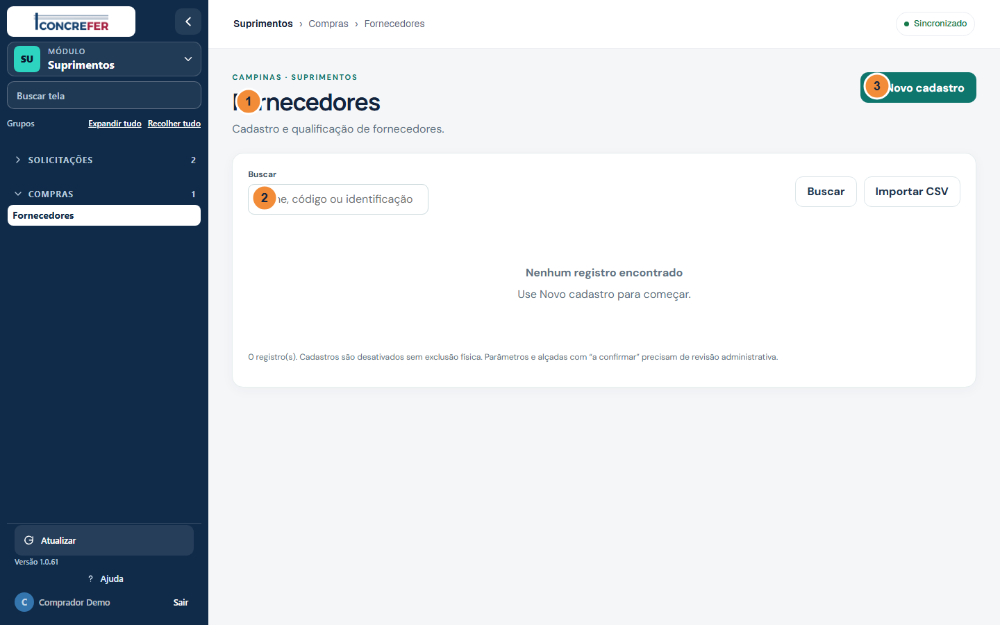
| Marca | Elemento | O que faz e como usar |
|---|---|---|
| 1 | Fornecedores | Veja a informação nesta área e use os controles permitidos ao seu papel. |
| 2 | Buscar | Veja a informação nesta área e use os controles permitidos ao seu papel. |
| 3 | Novo cadastro | Abre o formulário lateral de inclusão. |
Como fazer
- Busque pelo nome ou CNPJ.
- Clique em Novo cadastro para preencher razão social, CNPJ e categorias.
- Use Editar para corrigir; desative um registro em vez de excluí-lo.
Regras importantes
O CNPJ é validado e não pode se repetir. Cotação, pedido e avaliação de fornecedor são da fase S3.
Mensagens e bloqueios
CSV com linha inválida não grava nenhuma linha; o relatório indica onde corrigir.
MANUAL DAS TELAS · CADASTROS MATERIAIS
Cadastros · materiais
O que é. Catálogo global de itens do almoxarifado, com categoria e unidade de estoque.
Quem usa. Comprador ou administrador; outros papéis consultam conforme permissão.
Como aparece em cada aparelho
Item por item
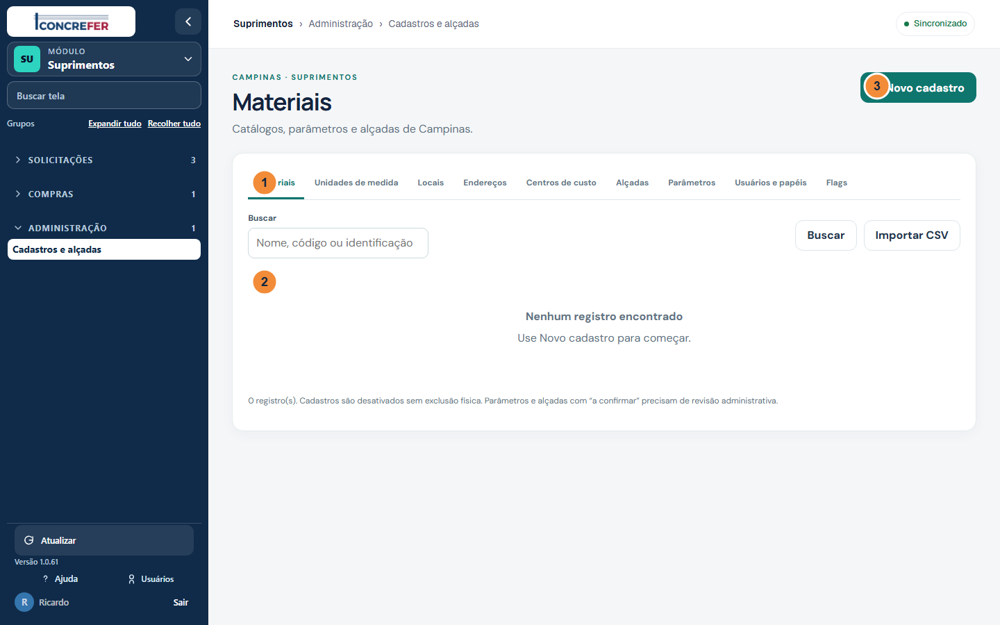
| Marca | Elemento | O que faz e como usar |
|---|---|---|
| 1 | Abas de cadastro | Veja a informação nesta área e use os controles permitidos ao seu papel. |
| 2 | Materiais | Veja a informação nesta área e use os controles permitidos ao seu papel. |
| 3 | Novo cadastro | Abre o formulário lateral de inclusão. |
Como fazer
- Use Materiais e busque pelo código ou descrição.
- Clique em Novo cadastro e informe código, descrição, categoria, unidade e domínio.
- Revise o relatório antes de importar um CSV.
Regras importantes
Materiais do domínio insumo da usina servem para solicitar/comprar; saldo de silos pertence ao Laboratório.
Mensagens e bloqueios
Código repetido, domínio incompatível ou CSV inválido impedem a gravação.
MANUAL DAS TELAS · CADASTROS CENTROS CUSTO
Cadastros · centros de custo
O que é. Define o setor/CC da solicitação em Campinas.
Quem usa. Administrador do Suprimentos.
Como aparece em cada aparelho
Item por item
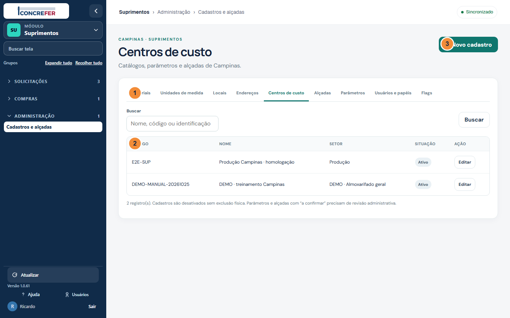
| Marca | Elemento | O que faz e como usar |
|---|---|---|
| 1 | Abas de cadastro | Veja a informação nesta área e use os controles permitidos ao seu papel. |
| 2 | Centros de custo | Veja a informação nesta área e use os controles permitidos ao seu papel. |
| 3 | Novo cadastro | Abre o formulário lateral de inclusão. |
Como fazer
- Abra a aba Centros de custo.
- Cadastre código, nome e setor quando necessário.
- Use a tela de Usuários e papéis para restringir cada pessoa a um CC ou deixar CC vazio para todos da unidade.
Regras importantes
O CC DEMO do manual é sintético; não o escolha para pedidos reais.
Mensagens e bloqueios
CC não autorizado não aparece para o solicitante e a API recusa seu uso.
MANUAL DAS TELAS · CADASTROS ALCADAS
Cadastros · alçadas
O que é. Configura quantos níveis de aprovação um valor requer.
Quem usa. Administrador do Suprimentos.
Como aparece em cada aparelho
Item por item
| Marca | Elemento | O que faz e como usar |
|---|---|---|
| 1 | Abas de cadastro | Veja a informação nesta área e use os controles permitidos ao seu papel. |
| 2 | Alçadas | Veja a informação nesta área e use os controles permitidos ao seu papel. |
| 3 | Novo cadastro | Abre o formulário lateral de inclusão. |
Como fazer
- Abra a aba Alçadas e leia nível, limite e CC.
- Ajuste a regra se a gestão confirmar novos limites.
- Garanta que haja um aprovador com papel e nível compatíveis.
Regras importantes
Configuração inicial de ensaio: N1 até R$ 2.500,00; acima disso N1 e N2. Estes valores estão marcados ‘a confirmar’.
Mensagens e bloqueios
Sem papel APROVADOR correspondente, o administrador não substitui automaticamente a alçada.
MANUAL DAS TELAS · CADASTROS PARAMETROS
Cadastros · parâmetros
O que é. Prazos e limites editáveis do processo.
Quem usa. Administrador do Suprimentos.
Como aparece em cada aparelho
Item por item
| Marca | Elemento | O que faz e como usar |
|---|---|---|
| 1 | Abas de cadastro | Veja a informação nesta área e use os controles permitidos ao seu papel. |
| 2 | Parâmetros | Veja a informação nesta área e use os controles permitidos ao seu papel. |
| 3 | Novo cadastro | Abre o formulário lateral de inclusão. |
Como fazer
- Abra a aba Parâmetros.
- Confira prazo normal, urgente e fechamento automático.
- Depois de uma decisão da gestão, edite o valor e registre a confirmação.
Regras importantes
Valores iniciais são de homologação e estão marcados ‘a confirmar’. Parâmetros de compras e inventário só terão efeito nas fases futuras.
Mensagens e bloqueios
Use apenas números válidos; uma chave existente não pode ser duplicada.
MANUAL DAS TELAS · CADASTROS USUARIOS PAPEIS
Cadastros · usuários e papéis
O que é. Concede o papel operacional por unidade, CC e nível de aprovação.
Quem usa. Administrador do Suprimentos.
Como aparece em cada aparelho
Item por item
| Marca | Elemento | O que faz e como usar |
|---|---|---|
| 1 | Abas de cadastro | Veja a informação nesta área e use os controles permitidos ao seu papel. |
| 2 | Usuários e papéis | Veja a informação nesta área e use os controles permitidos ao seu papel. |
| 3 | Novo cadastro | Abre o formulário lateral de inclusão. |
Como fazer
- Abra Usuários e papéis e clique em Novo cadastro.
- Informe o ID IAM existente, o papel e, se aplicável, nível/CC.
- Confira o acesso com a própria conta depois de salvar.
Regras importantes
CC vazio vale para todos os centros de custo da unidade. ADMIN não aprova sem APROVADOR N1/N2. A concessão de tela na casca também é necessária.
Mensagens e bloqueios
Acesso negado pode indicar tela sem concessão, papel ausente, CC diferente ou fase desabilitada.
MANUAL DAS TELAS · PWA INICIO
PWA · início
O que é. Atalho instalado no celular com estado de sincronização e os pedidos recentes.
Quem usa. Solicitante; o aprovador também vê sua aba de decisões.
Como aparece em cada aparelho
Item por item
| Marca | Elemento | O que faz e como usar |
|---|---|---|
| 1 | Início | Veja a informação nesta área e use os controles permitidos ao seu papel. |
| 2 | Novo pedido | Veja a informação nesta área e use os controles permitidos ao seu papel. |
| 3 | Instalar | Cria o atalho próprio do Suprimentos no aparelho, quando disponível. |
Como fazer
- Abra o ícone Suprimentos na tela inicial do aparelho.
- Veja se o topo mostra Sincronizado ou Sem conexão.
- Toque em Nova solicitação ou em um pedido recente.
Regras importantes
O PWA usa a mesma conta do Unificado. O botão Instalar aparece no navegador compatível.
Mensagens e bloqueios
Se pedir acesso, entre primeiro no Unificado; sem login anterior o PWA não abre a fila offline.
MANUAL DAS TELAS · PWA NOVA ITENS
PWA · nova, itens
O que é. Busca por nome/código, QR quando o aparelho oferece leitura, e item livre.
Quem usa. Solicitante e administrador.
Como aparece em cada aparelho
Item por item
| Marca | Elemento | O que faz e como usar |
|---|---|---|
| 1 | Buscar | Veja a informação nesta área e use os controles permitidos ao seu papel. |
| 2 | Item livre | Veja a informação nesta área e use os controles permitidos ao seu papel. |
| 3 | Continuar | Veja a informação nesta área e use os controles permitidos ao seu papel. |
Como fazer
- Busque no catálogo ou toque no item frequente.
- Ajuste a quantidade pelos botões de menos e mais.
- Use Item que não acho na lista para descrever livremente; toque em Continuar.
Regras importantes
O catálogo pode ser consultado sem sinal depois da primeira carga. Não mostra saldo nem preço.
Mensagens e bloqueios
Sem material selecionado, Continuar fica desabilitado. Se o QR não estiver disponível, digite o código.
MANUAL DAS TELAS · PWA NOVA DETALHES OFFLINE
PWA · detalhes sem conexão
O que é. Guarda a solicitação no aparelho até haver rede e sessão válida.
Quem usa. Solicitante e administrador.
Como aparece em cada aparelho
Item por item
| Marca | Elemento | O que faz e como usar |
|---|---|---|
| 1 | Centro de custo | Escolha um centro para o qual você tenha papel de solicitante. |
| 2 | Urgência | Normal, Urgente ou Parou produção; a última requer explicação detalhada. |
| 3 | Sem conexão | O pedido será mantido no aparelho e enviado quando a rede voltar. |
Como fazer
- Escolha o CC, data, urgência e escreva a justificativa.
- Anexe foto se ajudar a identificar o item.
- Toque em Enviar; a faixa Sem conexão indica que ele ficará pendente. Reabra o PWA conectado para sincronizar.
Regras importantes
O reenvio preserva a mesma identificação e não duplica o pedido. Aprovações não funcionam offline.
Mensagens e bloqueios
Se a sessão expirar, entre novamente no Unificado. A fila permanece no aparelho até confirmação do servidor.
MANUAL DAS TELAS · PWA MINHAS
PWA · minhas
O que é. Lista o que foi enviado e o que ainda está na fila do aparelho.
Quem usa. Solicitante.
Como aparece em cada aparelho
Item por item
| Marca | Elemento | O que faz e como usar |
|---|---|---|
| 1 | Meus pedidos | Veja a informação nesta área e use os controles permitidos ao seu papel. |
| 2 | Pedido | Veja a informação nesta área e use os controles permitidos ao seu papel. |
| 3 | Navegação | Veja a informação nesta área e use os controles permitidos ao seu papel. |
Como fazer
- Toque em Minhas na barra inferior.
- Leia o selo da situação de cada pedido.
- Abra um cartão para acompanhar ou confirmar uma entrega.
Regras importantes
‘No aparelho’ significa envio pendente; aguarde sincronização antes de abrir outro pedido igual.
Mensagens e bloqueios
Uma lista vazia pode indicar que ainda não há pedido ou que o cache não foi carregado antes de ficar offline.
MANUAL DAS TELAS · PWA ACOMPANHAR
PWA · acompanhar
O que é. Linha do tempo, itens e confirmação de uma entrega.
Quem usa. Solicitante dono do pedido.
Como aparece em cada aparelho
Item por item
| Marca | Elemento | O que faz e como usar |
|---|---|---|
| 1 | Situação | Veja a informação nesta área e use os controles permitidos ao seu papel. |
| 2 | Histórico | Mostra o que aconteceu, quem fez e quando. |
| 3 | Recebi tudo | Confirma que a quantidade e os itens foram recebidos. |
Como fazer
- Abra o pedido Entregue em Minhas.
- Confira a lista e as quantidades recebidas.
- Toque em Recebi tudo ou Recebi com problema; no segundo caso descreva a divergência.
Regras importantes
Sem resposta em 48 horas, o sistema fecha automaticamente. Problema informado reabre o atendimento.
Mensagens e bloqueios
Os botões aparecem só quando o pedido está Entregue. Texto vazio bloqueia o relato do problema.
MANUAL DAS TELAS · PWA APROVAR
PWA · aprovar
O que é. Mostra pendências do nível e CC concedidos.
Quem usa. Aprovador N1 ou N2.
Como aparece em cada aparelho
Item por item
| Marca | Elemento | O que faz e como usar |
|---|---|---|
| 1 | Minha alçada | Veja a informação nesta área e use os controles permitidos ao seu papel. |
| 2 | Pedido | Veja a informação nesta área e use os controles permitidos ao seu papel. |
| 3 | Aprovar | Aceita o pedido dentro da alçada atribuída à sua conta. |
Como fazer
- Toque na aba Aprovar.
- Confira urgência, solicitante, valor e prazo do cartão.
- Toque em Aprovar ou Devolver; para devolver, descreva o ajuste.
Regras importantes
Decisões exigem conexão. A aba fica oculta para quem não possui papel APROVADOR.
Mensagens e bloqueios
Se estiver offline, os botões ficam desabilitados. Pedido fora da sua alçada não entra na lista.
05 · ACESSO NO APARELHO
Instalar e usar o PWA
Endereço da homologação: https://concrefer.concretrack.com.br:18446/unificado/suprimentos/pwa/. Entre primeiro no Unificado com sua conta concedida; o PWA não possui senha própria.
Android · Chrome
- Abra o endereço do PWA no Chrome e entre com a conta do Unificado.
- Toque em Instalar dentro do PWA, se o navegador mostrar essa opção.
- Se não aparecer, abra o menu ⋮ do Chrome e escolha Instalar app ou Instalar e criar atalho; confirme.
- Abra o ícone Suprimentos na tela inicial e confira o estado de sincronização.
Passos do sistema operacional: Ajuda oficial do Chrome para Android · Ajuda oficial da Apple para iPhone. Os nomes do menu podem variar conforme a versão do aparelho.
06 · ACOMPANHAMENTO
Situações da solicitação
| Situação | Significado | Quem age depois |
|---|---|---|
| Rascunho | Pedido criado, ainda não enviado. | Solicitante envia ou cancela. |
| Em aprovação N1 | Aguardando primeira decisão. | Aprovador N1. |
| Em aprovação N2 | N1 aprovou; valor exige segunda decisão. | Aprovador N2. |
| Devolvida | Ajuste pedido com comentário. | Solicitante corrige e reenvia. |
| Aprovada | Alçada concluída; falta iniciar atendimento. | Almoxarife separa. |
| Em atendimento | Item separado ou entrega parcial. | Almoxarife conclui a entrega. |
| Entregue | Todos os itens entregues; falta aceite. | Solicitante confirma ou relata problema. |
| Concluída | Aceite feito ou fechamento automático após 48 h. | Ninguém; consultar histórico. |
| Reprovada | Aprovação negada com motivo. | Solicitante consulta comentário. |
| Cancelada | Solicitante cancelou antes do atendimento. | Ninguém. |
07 · CONFIGURAÇÃO INICIAL
Parâmetros e alçadas
Os valores abaixo são sementes da homologação e estão a confirmar pela gestão de Campinas na aba Cadastros e alçadas. Não copie esses limites para uma norma interna sem validação.
| Regra | Valor inicial | Uso hoje |
|---|---|---|
| Aprovação N1 | Até R$ 2.500,00 | Sim |
| Aprovação N2 | Acima de R$ 2.500,00, após N1 | Sim |
| SLA normal | 24 horas | Sim |
| SLA urgente | 4 horas | Sim |
| Fechamento após entrega | 48 horas | Sim |
| Ajuste de inventário sem aprovação | R$ 200,00 | Fase S2 |
| Cotação mínima de três ofertas | Acima de R$ 1.000,00 | Fase S3 |
| Tolerância de preço no pedido | 10% | Fase S3 |
08 · PLANEJAMENTO
Próximas fases · ainda não disponível
S2 · Almoxarifado geral
Saldo, reserva, endereçamento, ficha de EPI e inventário. A separação e a entrega de S1 já funcionam manualmente, sem lançar saldo.
S3 · Compras e recebimento
Cotação, pedido de compra, recebimento com NF, inspeção de Qualidade, não conformidade e avaliação de fornecedor. O cadastro básico de fornecedores já funciona.
S4 · Integração com o Laboratório
Sugestões de ressuprimento dos insumos da usina e vínculo do pedido de compra à entrada no estoque do Laboratório. Os silos e as massadas não fazem parte do estoque do Suprimentos.
09 · CONSULTA RÁPIDA
Glossário
| Alçada | Limite e nível que definem quem pode aprovar. |
|---|---|
| CC | Centro de custo/setor ao qual o pedido pertence. |
| Flag | Chave que liga ou desliga uma fase do módulo por unidade. |
| PWA | Aplicação web que pode ser instalada como ícone no celular. |
| Reserva | Separação de saldo para um pedido; função prevista para S2. |
| Cross-docking | Material comprado para um pedido que segue direto ao atendimento; previsto para S3. |
| Item livre | Item descrito pelo solicitante quando ainda não consta do catálogo. |
Manual baseado nas telas e fluxos autenticados de homologação em 25/10/2026, no plano v2 e nas evidências E4–E7. Os pedidos DEMO foram criados exclusivamente para estas capturas.